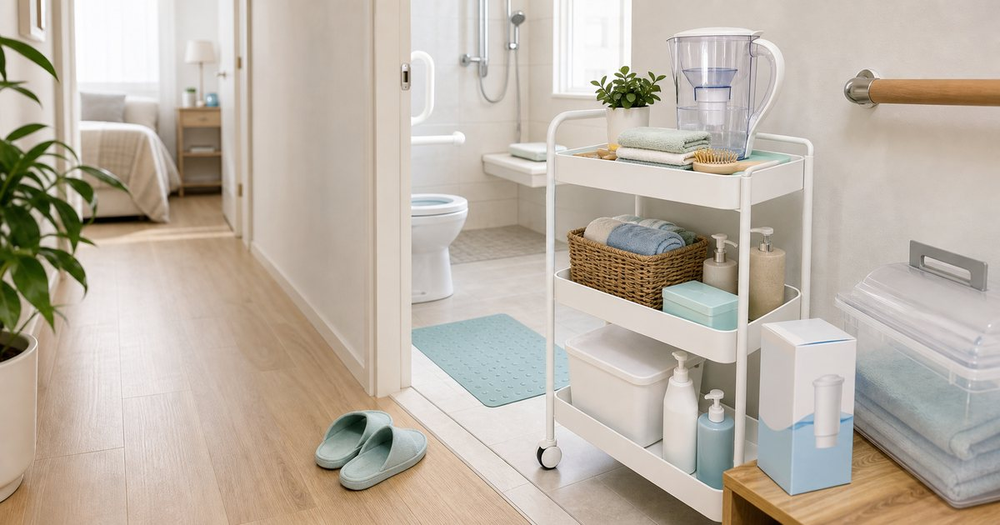

Elite Fashion｜家中照護動線怎麼整理：沐浴、移位、收納與安全提醒
家中照護用品不能只看單品，還要看浴室動線、收納、清潔、濾水與家人協作。先把高風險位置整理清楚，再添購用品。

先畫出動線：床邊、浴室、走道與收納點
居家照護第一步不是買用品，而是畫出人會怎麼移動。從床邊到浴室、從浴室到更衣、從用品收納到清潔晾乾，每一段都可能決定用品是否適合。
可以把 TWyzy、一然健康、EVERPOLL、安里嚴選、COZZY 與完美主義 放在同一張清單裡，但不要把它們理解成同一種用途。編輯部會先看使用位置、尺寸、收納、清潔、是否需要家人協助，以及是否能被穩定放進日常。
比較穩妥的順序是先確認 走道寬度、門檻高度、浴室大小與家人協助方式。常見失誤是 只看單品功能，沒有量家中尺寸；在 長輩同住、短期照護、小宅浴室與租屋空間 裡，先把動線與使用門檻整理好，比急著添購更多物件更實際。
- 先量尺寸，再看商品。
- 若涉及移位或照護風險，應諮詢專業人員。
沐浴用品要看清潔、晾乾與收納
沐浴相關用品最重要的是安全使用、清潔和晾乾。若浴室潮濕、收納不足或家人不知道怎麼協助，再好的用品也可能造成困擾。
可以把 TWyzy、一然健康、安里嚴選與完美主義 放在同一張清單裡，但不要把它們理解成同一種用途。編輯部會先看使用位置、尺寸、收納、清潔、是否需要家人協助，以及是否能被穩定放進日常。
比較穩妥的順序是先確認 用品使用後是否容易清潔、是否能晾乾、是否占用走道。常見失誤是 買了體積合適但清潔困難的用品；在 小浴室、共用浴室與需要家人協助的沐浴流程 裡，先把動線與使用門檻整理好，比急著添購更多物件更實際。
- 浴室用品要有固定晾乾位置。
- 地面濕滑與門檻問題要先處理。
移位與支撐用品不能靠猜測
移位、支撐或輔助用品涉及個人狀況與使用技巧，不適合只靠網路文章決定。文章能做的是提醒檢查尺寸、動線與專業諮詢，而不是替讀者做判斷。
可以把 一然健康、安里嚴選、BELEX、Jasper 與 TWyzy 放在同一張清單裡，但不要把它們理解成同一種用途。編輯部會先看使用位置、尺寸、收納、清潔、是否需要家人協助，以及是否能被穩定放進日常。
比較穩妥的順序是先確認 使用者身高體重、照護者力量、空間限制與專業建議。常見失誤是 把他人經驗直接套用在自己家人身上；在 術後返家、長輩照護與短期行動不便 裡，先把動線與使用門檻整理好，比急著添購更多物件更實際。
- 需要支撐或移位時，先問專業人員。
- 用品說明書和限制要完整保留。
濾水與清潔用品要放在照護動線裡看
照護場景也包含飲水、清潔和耗材管理。濾水設備、生活選物或收納用品不一定是主角，但會影響照護者每天的工作量。
可以把 EVERPOLL、COZZY、完美主義、一然健康與安里嚴選 放在同一張清單裡，但不要把它們理解成同一種用途。編輯部會先看使用位置、尺寸、收納、清潔、是否需要家人協助，以及是否能被穩定放進日常。
比較穩妥的順序是先確認 耗材更換、清潔頻率、收納高度與誰負責補貨。常見失誤是 把耗材放太分散，最後每天都在找東西；在 家庭廚房、浴室外收納與照護用品櫃 裡，先把動線與使用門檻整理好，比急著添購更多物件更實際。
- 耗材集中放，標示更換時間。
- 用品高度要讓主要照護者容易拿取。
家人協作要寫下來，不要只靠默契
照護日常最怕「大家都以為有人會做」。清潔、補貨、晾乾、回收、充電、檢查耗材，都應該有簡單分工。
可以把 一然健康、EVERPOLL、TWyzy、COZZY 與完美主義 放在同一張清單裡，但不要把它們理解成同一種用途。編輯部會先看使用位置、尺寸、收納、清潔、是否需要家人協助，以及是否能被穩定放進日常。
比較穩妥的順序是先確認 誰負責清潔、誰負責補貨、誰檢查耗材。常見失誤是 把照護用品買齊後，沒有安排維護責任；在 多位家人輪流照顧、外籍看護協作與週末返家探視 裡，先把動線與使用門檻整理好，比急著添購更多物件更實際。
- 用一張紙列出用品位置和負責事項。
- 補貨清單要放在家人都看得到的位置。
最先整理的三個位置：浴室門口、床邊、用品櫃
如果只能先做一輪整理，從浴室門口、床邊與用品櫃開始。這三個位置通常最容易卡住，也最容易看出是否需要添購用品。
可以把 TWyzy、一然健康、EVERPOLL、安里嚴選、COZZY 與完美主義 放在同一張清單裡，但不要把它們理解成同一種用途。編輯部會先看使用位置、尺寸、收納、清潔、是否需要家人協助，以及是否能被穩定放進日常。
比較穩妥的順序是先確認 是否能安全通過、是否方便拿取、是否容易清潔。常見失誤是 先買很多用品，卻沒有處理最常卡住的三個位置；在 短期照護準備、長輩同住與家中安全巡檢 裡，先把動線與使用門檻整理好，比急著添購更多物件更實際。
- 先清空動線，再放用品。
- 照護用品寧可少而明確，不要多而分散。
FAQ
照護用品可以直接照網路清單買嗎？
不建議完全照清單購買。應先量家中尺寸、確認使用者狀況與照護方式，必要時諮詢專業人員。
浴室照護用品最容易忽略什麼？
最容易忽略清潔、晾乾、地面濕滑與收納。這些會直接影響是否能安全且持續使用。
家中照護要先整理哪裡？
可先從浴室門口、床邊與用品櫃開始，這三處通常最容易發現動線、收納與清潔問題。
下一步建議
如果你正在整理家中的照護用品，先從浴室、床邊與用品櫃三個位置檢查動線。
重要警語
本文為一般居家照護動線與用品整理，不構成醫療、復健、照護訓練或安全結論。涉及移位、沐浴照護、支撐用品或個人健康狀況時，請諮詢合格專業人員。
本文含品牌／商品導購連結；若你透過部分商品連結前往選購，Elite Fashion 可能取得合作收益。本文仍以編輯判斷與使用情境整理為主，價格、規格、活動與庫存請以商品頁公告為準。